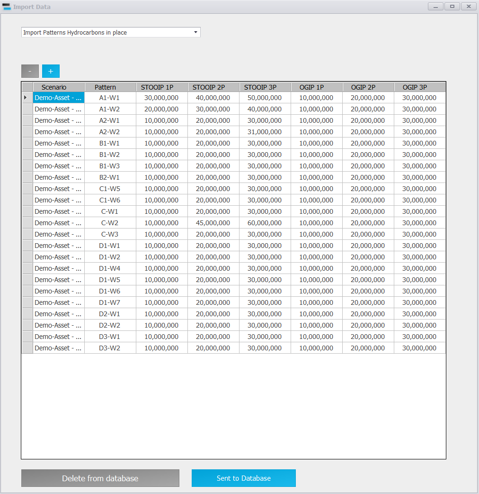
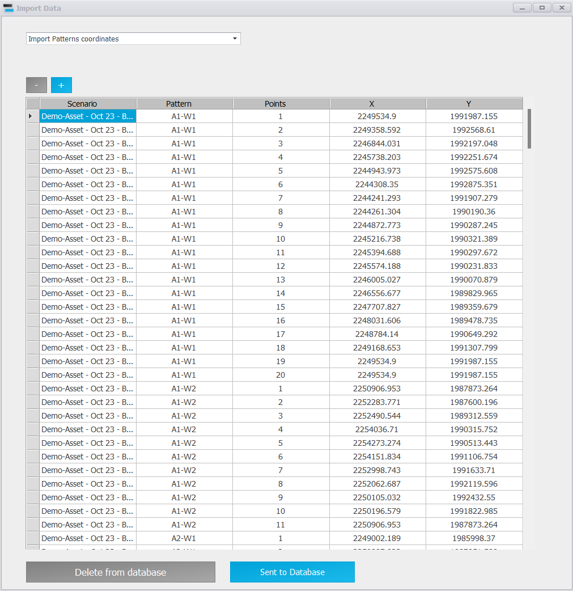
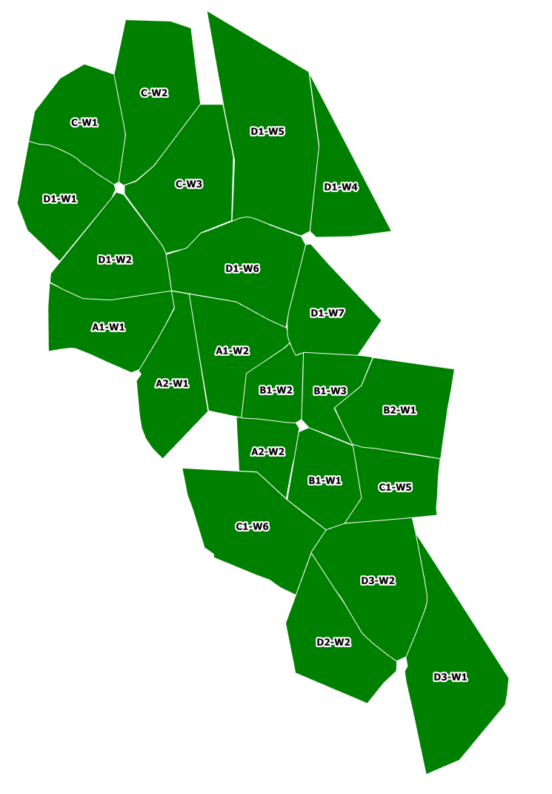
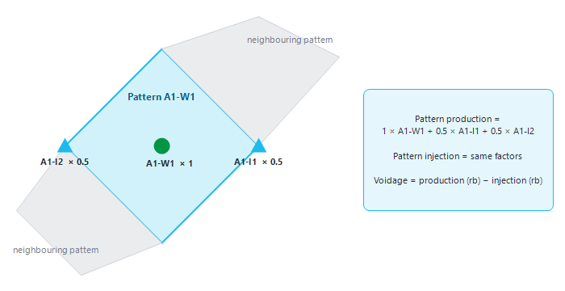
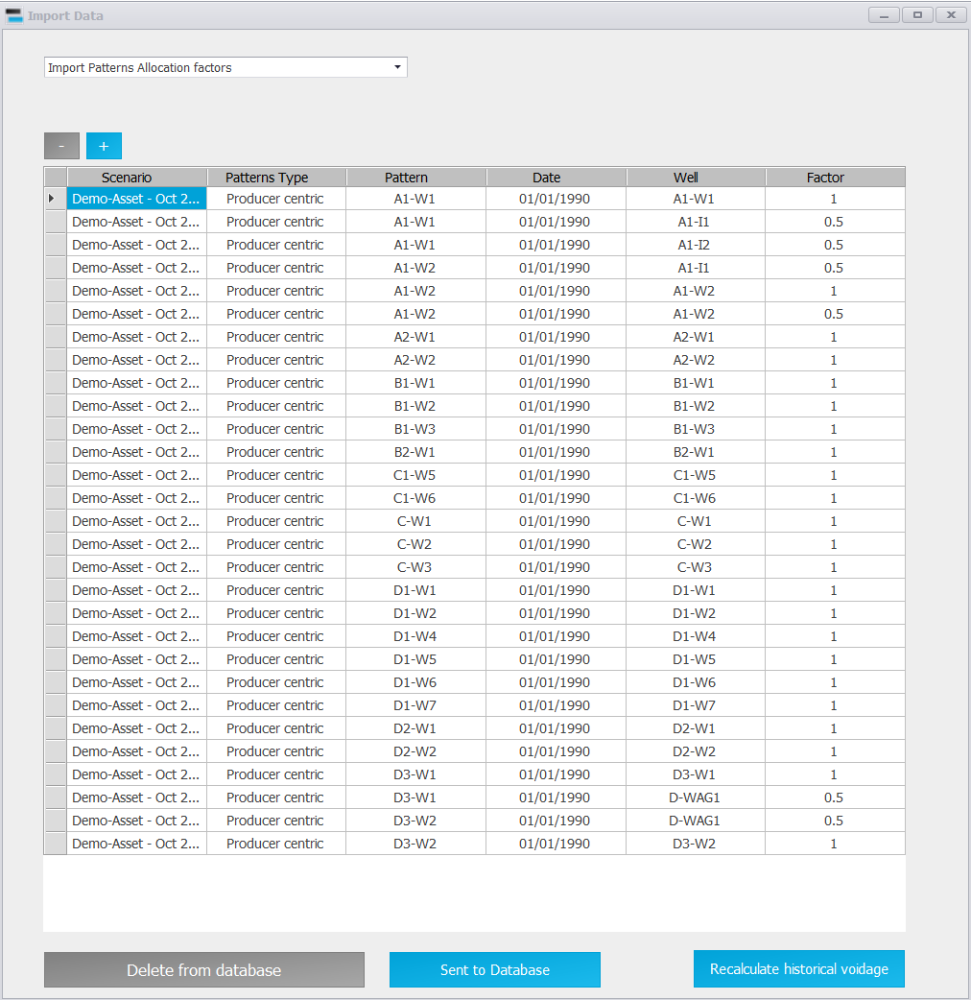

|
Patterns
1. Overview — what a pattern is
A pattern is a group of wells, each with a share (allocation factor), for which Precept adds up production and injection to report voidage, voidage replacement ratio (VRR) and recovery factor. Patterns are used for waterflood and gas-injection surveillance and forecasting.
Production and injection are converted to reservoir conditions with the well PVT (see PVT). Voidage = production at reservoir conditions minus injection at reservoir conditions.
Three sets of data describe the patterns of a scenario:
•Allocation factors — which wells belong to each pattern, and with what share. Required for voidage.
•Hydrocarbons in place (STOOIP and OGIP) — for recovery factors.
•Coordinates — the outline of each pattern, to show it on maps.
The whole field and each reservoir are handled automatically: you do not need to define them as patterns.
2. Open the pattern data
1.Click "Decline Curves" on the main ribbon and select the scenario (see Decline curves: Production and Injection potentials).
2.Click "Pattern properties" in the "Import Data" group of the Decline Curves ribbon. The "Import Data" window opens.
3.Choose what to edit in the list at the top: "Import Patterns Allocation factors", "Import Patterns Hydrocarbons in place", "Import Patterns coordinates", "Import backgroung elements" or "Create polygons".
The table shows the data of the scenario. Type in it, or paste from Excel. "+" and "-" add and remove rows, "Clear table" empties the grid. Click "Save" to store it: Save replaces all the rows of that table for the scenario with what is in the grid.
"Copy pattern property to all scenario in Project" copies the allocation factors, hydrocarbons in place, coordinates and PVT of this scenario to every other scenario of the same project, replacing what they had.
3. Hydrocarbons in place
Select "Import Patterns Hydrocarbons in place". Enter one row per pattern: "Pattern", "STOOIP 1P", "STOOIP 2P", "STOOIP 3P", "OGIP 1P", "OGIP 2P", "OGIP 3P".
When a pattern has the same name as a well, Decline Curves shows its STOOIP (OGIP for a gas producer) in the "STOOIP" box of that well, as a check on the recovery of the decline curve.

Hydrocarbons in place per pattern.
4. Pattern coordinates
Select "Import Patterns coordinates". Each pattern is a polygon: one row per corner, with "Pattern", "Points" (the order of the corners), "X" and "Y". Repeat the first corner as the last point to close the polygon. The patterns are drawn on the maps opened with "Maps" on the main ribbon.
How to draw the patterns depends on the field:
•Producers only — usually one pattern per well, with the well at the centre and the radius of investigation as the boundary.
•Waterflood with producers surrounded by injectors — usually one pattern per producer, with the boundary drawn through the surrounding injectors.

Pattern coordinates: one row per corner of each polygon.
Seen from the top, the patterns then look like this:

Instead of typing coordinates, you can draw the polygons on a map image: select "Create polygons", load and set up the map image, choose the action "Draw Reservoir polygons", click the corners, then "Close polygon and Save". "Import backgroung elements" adds other shapes (coastline, lease outline...) to the maps of the asset.
5. Allocation factors
Select "Import Patterns Allocation factors". Enter one row per well of each pattern:
•Patterns Type — a label that groups patterns (for example "Producer centric"). It is used to pick patterns when drawing polygons.
•Pattern — the pattern name.
•Date — the date from which the factor applies. A factor applies until the next date entered for the same pattern and well, so you can change a well's share over time (for example when a new injector is drilled).
•Well — a well of the pattern.
•Factor — the share of that well's production and injection counted in the pattern (1 = all of it).
Example: producer A1-W1 is surrounded by two injectors, A1-I1 and A1-I2, each shared with a neighbouring pattern. Pattern A1-W1 (named after its producer) is defined with factor 1 for A1-W1 and 0.5 for each injector:
•Pattern A1-W1 production = 1 × A1-W1 production + 0.5 × A1-I1 production + 0.5 × A1-I2 production
•Pattern A1-W1 injection = 1 × A1-W1 injection + 0.5 × A1-I1 injection + 0.5 × A1-I2 injection

Figure 1 — Pattern A1-W1: the producer counts in full, each shared injector counts for half.

Allocation factors, with the "Recalculate historical voidage" button.
6. Historical voidage
Once the factors are saved, click "Recalculate historical voidage" (shown when "Import Patterns Allocation factors" is selected). Precept takes the allocated production and injection of every well, month by month, converts them to reservoir conditions with the PVT, applies the factors, and stores the historical production, injection and voidage of each pattern, of each reservoir and of the field.
•Every well of a pattern needs PVT data. If one is missing, Precept stops with "There are no PVT data for the Well ...".
•The historical voidage is stored once per asset, not per scenario: recalculating it from one scenario replaces it for the whole asset.
•Recalculate it whenever you import new allocated data or change the factors or the PVT.
7. Patterns in the forecast
To get voidage per pattern in the forecast, tick "Voidage" in the settings of the scenario ("Settings" on the main ribbon). Precept then reports each pattern as a node of type "Pattern" in the forecast results (see Forecast results: Patterns). Untick it to speed up runs when you do not need voidage.
The setting "Play with injection to keep VRR =1 per reservoir" works per reservoir, not per pattern: it lets the optimiser adjust injection so that each reservoir's injection replaces its production.
|